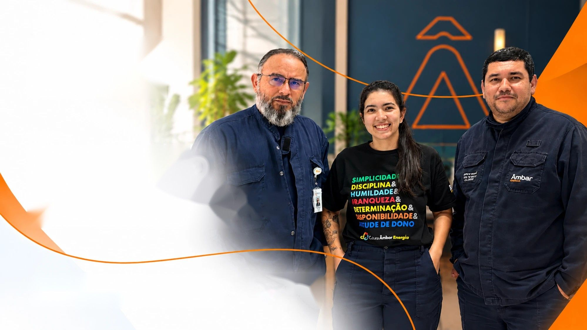

Materiais oficiais
Apresentações preparadas pelo time de DHO, organizadas por tema.



Liderar é uma construção diária. É aprender com as experiências, escutar pessoas, reconhecer oportunidades e ter coragem para evoluir.
Esta Trilha é um espaço para ampliar olhares, fortalecer habilidades e transformar aprendizados em atitudes que façam a diferença no dia a dia.
Porque grandes lideranças não apenas conduzem resultados. Elas inspiram, desenvolvem e deixam pessoas melhores pelo caminho.
Apresentações preparadas pelo time de DHO, organizadas por tema.
Ao concluir os materiais, a avaliação é liberada, com resultado na hora.
Com 70% de acerto ou mais, o certificado fica disponível para download.
Sem senha: basta estar na base de colaboradores.
Os temas ficam no menu lateral do seu painel.
Leia os materiais em PDF e responda à avaliação.
Aprovado? O certificado é emitido automaticamente.
Os temas aparecerão aqui assim que o RH publicar os conteúdos.
Colaboradores cujo CPF está na base enviada pelo RH. Se aparecer “Acesso negado”, procure o time de DHO para verificar seu cadastro.
Não. O acesso é feito somente com o CPF.
Sim. Vale a sua melhor nota. Ao atingir a nota mínima, o certificado é emitido.
No seu painel, em “Meus certificados”, e dentro de cada tema aprovado.